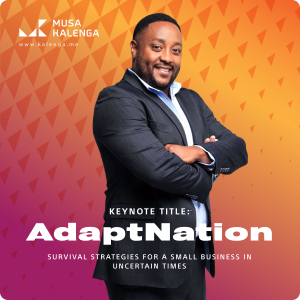

ADAPTNATION
Response framework can be used by SME’s to better navigate the COVID19
pandemic. Broadly, the
keynote covers the stabilisation of business, Assessment of readiness to change, a guide on How to
Pivot
and then Growth after Covid19. Key learning outcomes for the audience are rapid decision framework, an
assessment framework applicable to mental readiness and business agility. These tools will help SME’s
fully embrace the opportunity to truly reinvent themselves in “The New Normal”.
Watch
Video

THE API HUMANITY
The world is in the eye of the storm when it comes to data and connectivity. To keep sane in this
unpredictable time, Musa shares insights into how he sees the world changing as the storm develops.
Watch
Video

ACT LIKE A HUMAN, THINK LIKE A BRAND
In this keynote, Musa focuses on the benefits of Human Centred Marketing, and how to use this approach
to build an Integrated Marketing Strategy. Using creativity as a differentiator, and by focusing on the
qualities that make us human, we can therefore create more powerful brands, that truly speak to the
needs of your target audience.
Watch
Video

LEADERSHIP AT THE SPEED OF LIGHT
In order to be at the cutting edge of technology, you need to keep pace with a rapidly evolving world.
This means being able to lead “at the speed of light”, and be able to adapt to constant changes. This
approach also means using data insights and intelligence to drive decision making that can ensure that
your organisation can consistently create business value in the long term.
Watch
Video

Response framework can be used by SME’s to better navigate the COVID19 pandemic. Broadly, the keynote
covers the stabilisation of business, Assessment of readiness to change, a guide on How to Pivot and then
Growth after Covid19. Key learning outcomes for the audience are rapid decision framework, an assessment
framework applicable to mental readiness and business agility. These tools will help SME’s fully embrace
the opportunity to truly reinvent themselves in “The New Normal”.
The world is in the eye of the storm when it comes to data and connectivity. To keep sane in this
unpredictable time, Musa shares insights into how he sees the world changing as the storm develops.
In this keynote, Musa focuses on the benefits of Human Centred Marketing, and how to use this approach
to build an Integrated Marketing Strategy. Using creativity as a differentiator, and by focusing on the
qualities that make us human, we can therefore create more powerful brands, that truly speak to the
needs of your target audience.
In order to be at the cutting edge of technology, you need to keep pace with a rapidly evolving world.
This means being able to lead “at the speed of light”, and be able to adapt to constant changes. This
approach also means using data insights and intelligence to drive decision making that can ensure that
your organisation can consistently create business value in the long term.